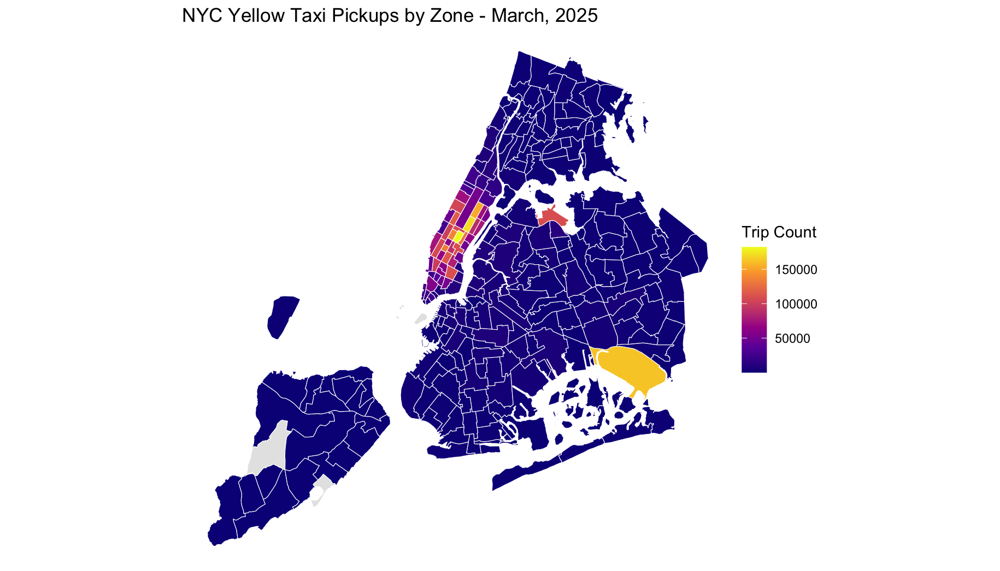
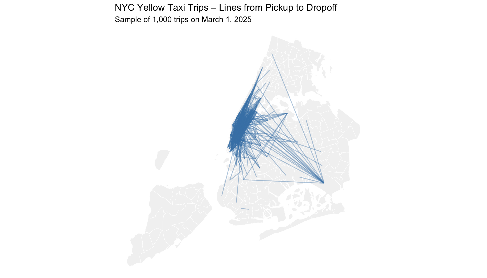
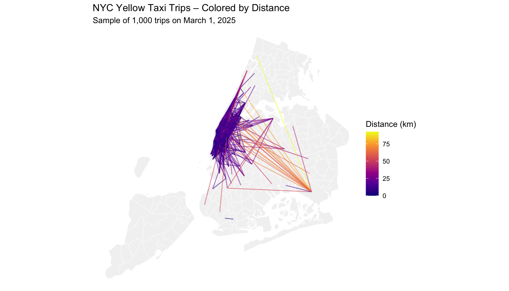

This page showcases visualizations from a sample of NYC yellow taxi trips, including temporal patterns and geographic movement. Data provided by the Taxi and Limousine Commission (TLC).
📊 Trip Volume by Hour

Hourly pickup trends from midnight to midnight.
🗺️ Trip Paths Across the City

Each line connects the centroid of the pickup and dropoff zone.
🌈 Trip Distances (Color-Scaled)

Color intensity reflects the great-circle distance of the trip.